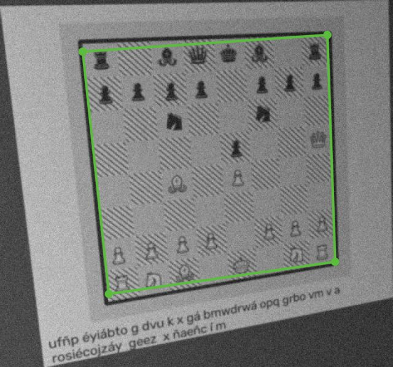
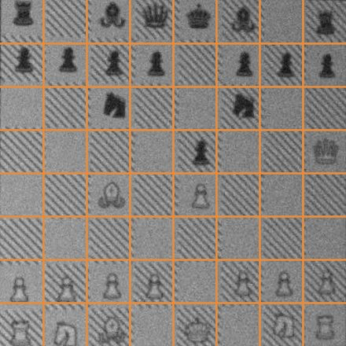
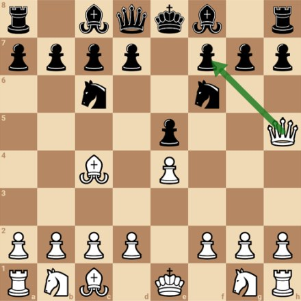
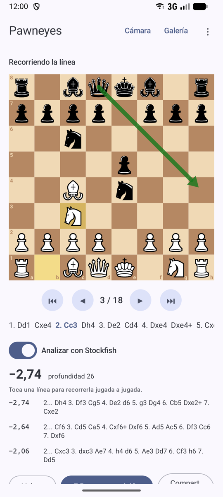
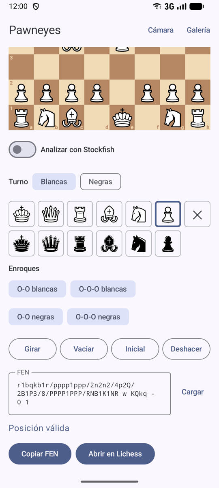
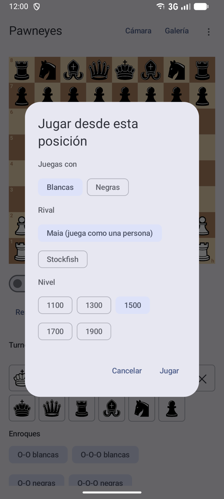

Es un proyecto hobby para aprender: visión por ordenador, un clasificador entrenado con datos sintéticos, Android con Compose y motores de ajedrez. Funciona razonablemente con los libros con los que lo he probado, pero no pretende competir con nada. Si lo que quieres es escanear diagramas de verdad, mejor chessvision.ai o aplicaciones similares.
De la foto a la posición
Tres pasos, todos en el móvil y sin conexión.

1Encuentra el tablero
OpenCV busca las casillas oscuras y sus esquinas, aunque la foto esté torcida o en perspectiva.

2Lee cada casilla
Lo endereza, lo corta en 64 casillas y una red pequeña, entrenada con miles de diagramas sintéticos, dice qué pieza hay en cada una.

3Comprueba y analiza
Corrige lo imposible, lee el turno del texto de la página y la deja lista para editar, analizar o jugar.
Todo se prototipa primero en Python, y la app Android reproduce exactamente el mismo resultado: hay tests que lo comprueban paso a paso en cada cambio.
Qué puedes hacer
Pensada para estudiar con libros de papel: del diagrama a una posición con la que trabajar.
Escanear
Desde la cámara, con autocaptura cuando el tablero se queda quieto, o desde la galería. Marca las casillas dudosas para que las revises.
Leer la página
El turno, si el pie lo dice («Juegan las negras») o se deduce de la jugada impresa, y si el diagrama está visto desde las negras.
Analizar
Stockfish 16 con las tres mejores líneas en notación española y una flecha para la mejor jugada. Se recorren jugada a jugada.
Resolver como ejercicio
Busca la mejor jugada sin ver la evaluación: la app te dice si es correcta, una imprecisión o un error, y cuánto pierdes.
Jugar la posición
Contra Stockfish, de 1350 de Elo a plena fuerza, o contra Maia, que juega como una persona de 1100 a 1900.
Guardar y compartir
Historial de escaneos con etiquetas de libro y página, y exportación a FEN, PGN, imagen o Lichess.
Así se ve
El escáner, el análisis, el editor, los ejercicios y las partidas.



Tus libros se quedan en tu móvil
Las fotos son páginas de tus libros. No salen del dispositivo.
Sin conexión
El escaneo, el OCR y los motores funcionan en el móvil: la app ni siquiera tiene permiso de acceso a Internet. Sin cuentas, anuncios ni analítica.
Nada a la nube
No entra en las copias de seguridad de Google: el historial y los escaneos se quedan en el dispositivo.
Código abierto
Todo el código está en GitHub bajo GPLv3, para revisarlo o compilarlo tú mismo.
Pruébala
Con Obtainium te avisa de cada versión nueva. También puedes bajar la APK a mano.